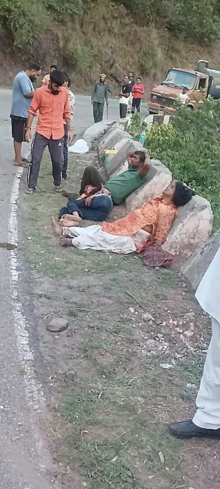
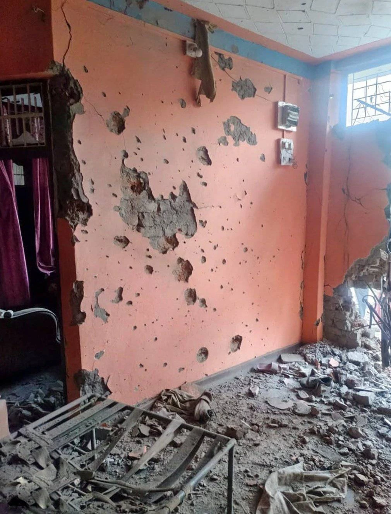

Kashmir Conflict Escalation Report (April–May 2025)
📰 Overview of Escalation
A series of tragic and violent events unfolded between India and Pakistan from late April to early May 2025, igniting international concern and public outrage. Here's a complete timeline breakdown of the events.
📍 1st Attack: Pahalgam Massacre (22 April 2025)
26 civilians were killed in Pahalgam, Kashmir while vacationing. India accused Pakistan, labeling it a “terrorist state.”
Historical context: Pakistan has long been associated with terrorist organizations like Osama bin Laden, Lashkar-e-Taiba, and D Company. India has accused Pakistan of cross-border terrorism for decades.
Sources: Source 1, Source 2, Source 3, Source 4
⚠️ TW: Gore, bloodied uncensored images.
📍 2nd Attack: Ceasefire Violations (Post-April 22)
Following the massacre, Pakistan reportedly violated ceasefire agreements on the mountainous borders, increasing military tension.
Source: Ceasefire Violation Report
📍 3rd Attack: Operation Sindoor by India (7 May 2025)
India launched targeted airstrikes into Pakistan, aiming at 9 terrorist camps. While civilians were not the main target, 2–3 adults and 1 child were killed.
Name Origin: "Sindoor" symbolizes the sacred red powder worn by Indian married women—chosen to honor the widows from the Pahalgam attack.
Source: Operation Sindoor Details
📍 4th Attack: Poonch Civilian Bombing (8 May 2025)
Terrorist shelling in Poonch, Jammu—believed to be linked with Pakistan—killed 15 civilians and injured 43 others, including 2 children.
⚠️ TW: Upsetting visual content: blood, destruction.
 
📍 5th Attack: Cross-Border Airstrikes (8–9 May 2025)
Pakistan launched over 50 missiles into India; Indian air defense successfully intercepted most. Indian retaliation followed, resulting in significant damage and casualties on both sides. Attacks continued overnight on both days.
Source: Attached Videos
🕊️ Ceasefire Declaration (10 May 2025)
After extensive damage and loss of life, both countries agreed to a ceasefire, halting further escalation.